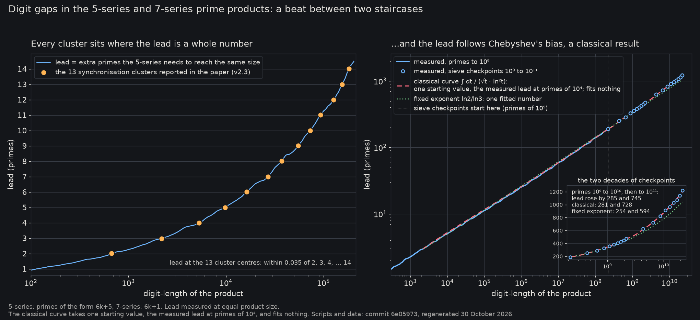
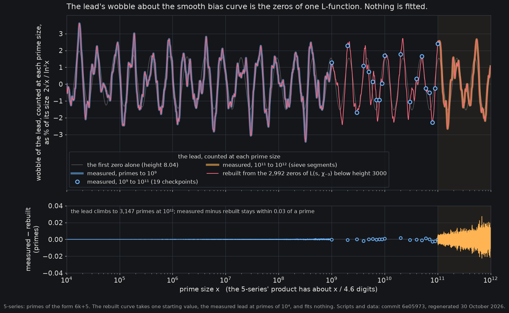

Chebyshev's bias, computed live
This page takes the primes up to a bound in two classes, those of the form 6k+5 and those of the form 6k+1, multiplies each class into one enormous integer, and counts the decimal digits of each, exactly, with Python running in your browser. The 6k+5 product comes out the longer, because primes of that form are slightly more common.

Run it here
Loading Python (about 6 MB, once)…
Waiting for Python…
| primes 6k+5 | primes 6k+1 | |
|---|---|---|
| how many | … | … |
| digits in their product | … | … |
The 6k+5 product has … more digits. The larger product, compared exactly: ….
- Python load
- … on this device, from starting the worker to Python being ready, download included
- Compute
- … on this device, Python's own time for the whole run above
Why exact integers
The float route to 10⁶¹ is the number you get from floor(exp(61 · ln 10)).
The exact route is the integer 10 ** 61. Both are shown below, as Python computed them just now.
exact above, float route below; the leading digits that agree are marked. … leading digits agree.
Difference, exact minus float route: …
Digits: float route …, exact …. Remainder mod 3: float route …, exact ….
Floating point keeps about 16 significant digits, so the float route gets the length of 10⁶¹ right and every digit after the first fourteen or so wrong; anything that depends on the last digit, such as the remainder mod 3, is luck. Exact integers get every digit.

Sources
- OEIS A057130: product of the first n primes of the form 6k−1 (the 6k+5 product above). A121940: product of the first n primes of the form 6k+1.
- Andrew Granville and Greg Martin, Prime number races, American Mathematical Monthly 113 (2006), 1–33.
- Carter Bays, Kevin Ford, Richard H. Hudson and Michael Rubinstein, Zeros of Dirichlet L-functions near the real axis and Chebyshev's bias, Journal of Number Theory 87 (2001), 54–76.
- This page's code, the tests and the scripts that drew the figures: github.com/cliffordkeeble/digit-gaps-mod6-primes.